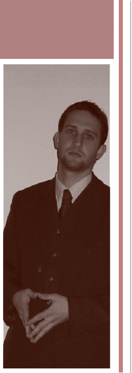

|

|
|
Õk - Mi vagyunk- az a nemzedék, akik a jövõt más szemmel tudjuk látni, „európai” szemmel és mi vagyunk az a réteg, akik a jelenbõl jövõt fognak faragni jelentõs életszínvonal növekedést eredményezve.
Hatalmas a potenciálunk. Mind tudási, mind piaci stratégiai szemszögbõl vizsgálva. Egy cégóriás nem engedheti meg magának, hogy felületesen kezelje a még csak „fiatal” nemzedék jövõbeni minõségi felvásárló erejét, így fontos az, hogy már az õ érzelmi húrjaikon is „eljátssza a sláger és kedvenc dallamokat”.
Valójában ki is tudhatná leginkább azt, hogy mi a kedvenc sláger, mely a leginkább megpendíti a húrokat? Minden szakterületen, minden életciklusban megvannak a maguk környezetében bölcseknek kikiáltott személyek, közösségek.
Az idõsek a legöregebb bölcs véleményét kérik ki a maguk környezetében, élethelyzetében felvetõdött kérdésekben. Egy csatában a vezér, hõs szavára hallgat több ezer követõ és mindenki saját énjét szeretné megtestesülve látni a hõsben, a vezérben, a bölcsben.
Nincs ez másként a mai fiatalok körében sem. Tudom, hisz Én is fiatal vagyok. Tudom mirõl beszélnek, mirõl álmodoznak és mit szeretnének elérni azok, akik nem csak beszélnek és beszélnek, hanem hajlandóak a tettek mezejére is lépni! Ismerem álmaikat és látom a szemükben a csillogást, amikor meglátnak egy gyönyörû házat, egy gyönyörû autót…
Örökre az emlékezetükbe vésõdik az emlékkép, ami a jövõjüket vetíti elõre. Viszont nem mindegy, hogy ez a kép mit ábrázol. Mit lát meg célként egy-egy jövõképben és mennyire tud hasonulni a látottakhoz.
Naponta ismerek meg új és új embereket, hisz ez a munkám. Én célt mutatok nekik, õk viszont nem mindegy, hogy milyen képet látnak maguk elõtt.
Ebben szeretném a prémiumot nyújtani. Ebben lehetnek partnereim, hogy valóban egy exkluzív, igényes és elérhetõ jövõképet tudjak feléjük sugározni.
|
|